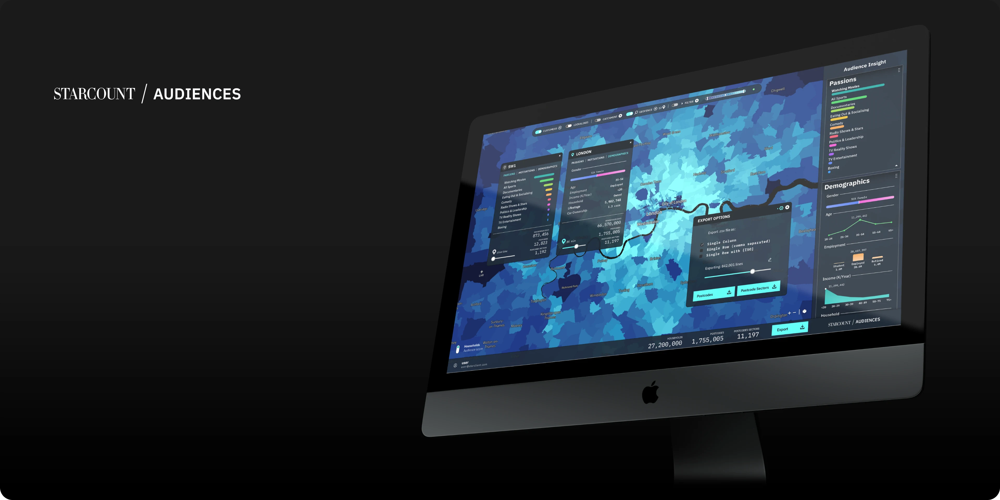
A social listening company with a twist on twitter data.
The designer role was poorly defined when I joined, effectively reporting to the engineering team. However my experience as a software developer of years past, worked to my advantage and helped me navigate that structure and find opportunities to make design a meaningful contributor.
After a few months working on the (then only) main product line, I was able to turn my role into a department, then into a small design team. Our earlier work and results placed Design as the driving force for Product and I was fortunate to design and launch 3 new product lines, including a groundbreaking product developed in tandem with Twitter and Royal Mail.
Head of Product Design
May 2017 - May 2019
- Market
- /B2B
Advertising - platform
- Desktop web
- location
- London, UK
Unexpected partnership
I had been in the company for about 8 months, and had completely redesigned their only product at the time — then launched a brand new one. At this point we secured a deal with Twitter (the first ever; using tweets to train data) and Royal Mail (UK post).
Toyota was a big fan of our two other products and was keen to spearhead this too.
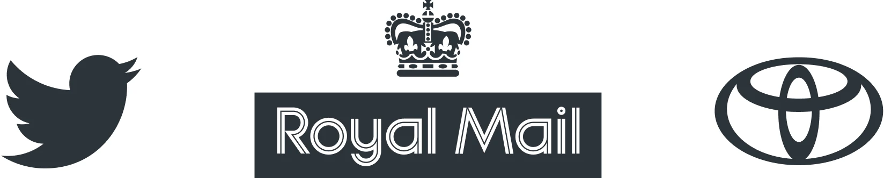
This came with a deadline.
Twitter had never been in such a deal, and I sorta stuck out my neck on a meeting saying we could make it work and I’d have something to show “before the ink was dry”. Toyota, which had had great results with our Observatory product, was looking to validade the early investment asap.
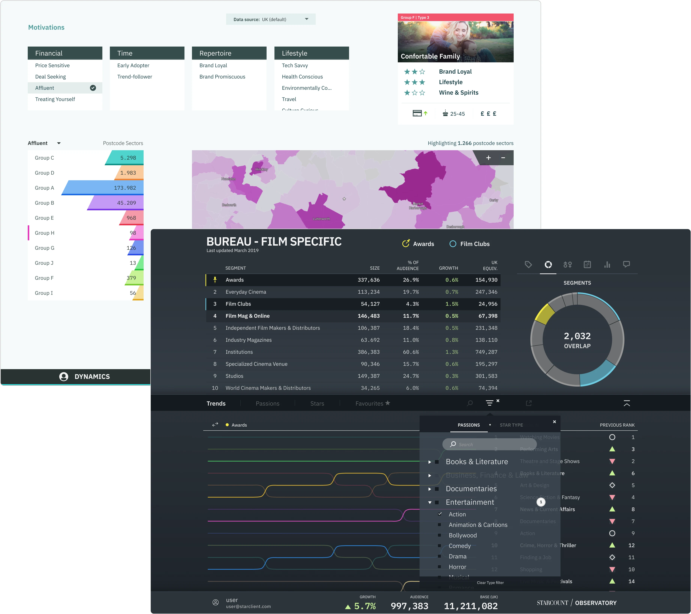
Dynamics
Observatory
Observatory x Twitter
Our Passion (interest) predicting tool, was doing very well in the UK market amongst brands with a strong online presence (specially, on Twitter). It started as a simple social listening tool like many others, but the clever folks in the data team figured a novelty way to cluster the info and go a level deeper.
Essentially, most tools will give you an Audience to target (with advertising) based on followed accounts — so if they follow Toyota, they probably like cars. That’s fairly basic, and often wrong. What Starcount did was to infer users’ interests based on “follows of follows”: say you follow David Beckham, that would mean to most tools that you’re into football. But we’d look at all your follows as a cluster, fork Beckham, then see what else you follow — if you also follow Wayne Rooney, you’re probably into football then, but if you follow Kim Kardashian instead, then you likely follow Becks for the fashion side of his life.
The insight that got Toyota hooked, was regarding their Prius car. The agreed assumption then, was that most people bought Prius because they were eco-conscious, and so millions were spent on ads with leaves and trees as background for the drive. According to our data however, the majority of people purchasing electric cards did so for the tech — these cars were considered more tech-y (in 2017 anyways). That insight made Toyota switch gears from leaves to fiber optics and blue florescent lines on their ads.
Dynamics x Royal Mail
After our success with Observatory, the next step was to put Passions on a map. Whilst our tool was giving great insights into online targeting, a lot of brands still relied heavily on direct mail, billboards (and other more traditional mediums) to reach their customers. And for that, the post-code is king.
Our data and engineering team did their best to extrapolate the location, based on small percentage of tweets that had location enabled — but the error margin was unsatisfactory. Somehow, management got around to landing a deal with Royal Mail, for post-code level data, on “type” of delivery — this was also on the height of GDPR launching, and yet, this data we received was all GDPR compliant. This meant we knew where “sports shoes” were delivered, or “cosmetics”, or “health food”, etc.
With this new data, we overlayed what we already had from social, and got a pretty good picture (for the UK) of where the people who engaged with Sports brands, lived and ordered for Sports shoes and clothing. Because we had data for the whole of the UK (from Royal Mail) we also started consuming more data from Twitter — which got noticed, at Twitter.
After a lengthy back and forth, we managed to agree to terms on a landmark deal with Twitter, that allowed us to scrape all new daily tweets, every day.
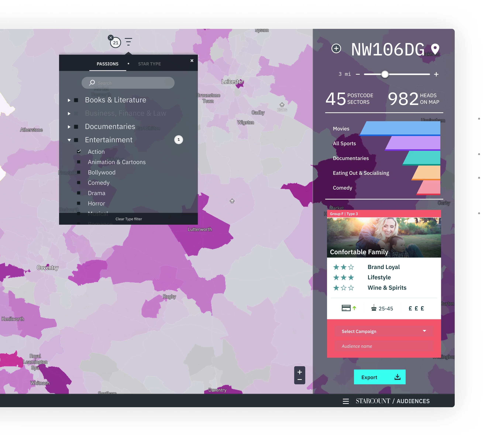
Proof of concept
Audiences v0
Since I was very familiar with both our other products, I was able to quickly patch up a v0 proof of concept to get the conversation started with Data and Engineering.
- We had a heatmap, that would show population density for the selected Passion (Interests).
- Drill down on sub-Passion for the displayed area.
- Persona card with key indicators of what audience and Group you could market to.
- Export .csv with all this data.
Tremendous potential
I was not impressed with what we had put together but everybody else was. The consequences were two-fold, we sorta proved the concept, and were not rushing against the clock anymore, but the company got greedy and set some very aggressive sales goal.
Maximum Viable Product
Since our weakest attempt produced such enthusiasm, I wanted to see what we could do if we’d really try. So I had 3 rounds of meetings; I spoke to data & engineering to really understand how far we could push what we had; I asked Sales what have customers always asked and we were never able to deliver, and finally I spoke directly to our closest clients, and asked the same: constraints aside, what’s your wishlist?
Wishlist x capacity
- Upload own data (CRM)
- Upload catchment area (geofence)
- Create bespoke geofence
- Target high-density areas
- Infer new markets, from current.
There was more, but objectively, these were the high hitters.
All clients wanted to upload their own data. Most had catchment data (location of their physical stores and surrounding areas from which they drew customers). Being able to just drop a pin on the map and set a radius (geofence). And see this all expressed in population density.
Finally, something we had been working on called Lookalikes, where given a market, we’d infer what kinda of audience was there — and then suggest other areas with likeminded people.
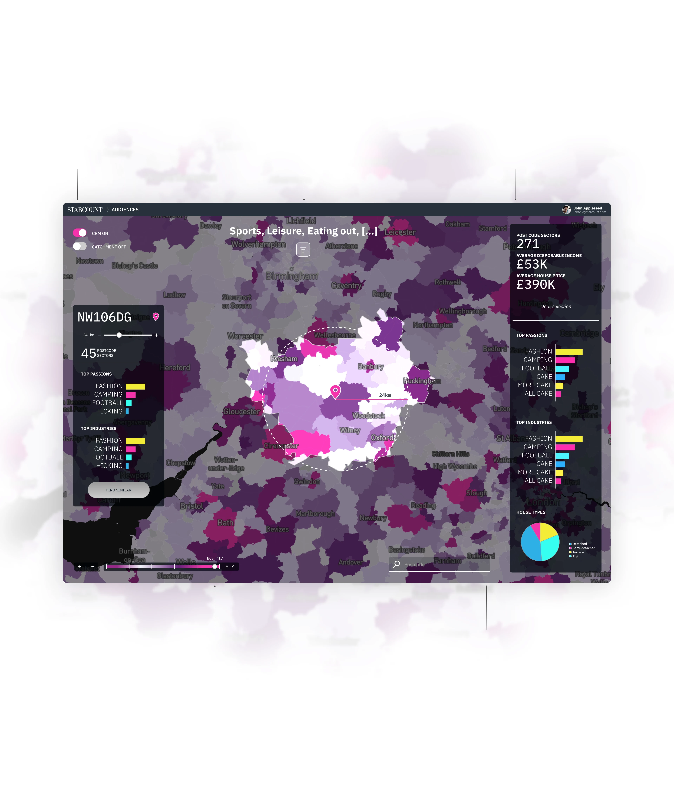
CRM upload
In this version, we were uploading both the CRM and Catchment files manually, for each tester client.
Audience filter
The population density was based on the Audience filter. Users could select multiple criteria.
Audience summary
Overview of the target audience. The metrics shown (Passions/Industries) would match the Audience filter.
Heatfilter v1
The first heatfilter implemented was actually manipulating the date range on the data. This would later change.
Search
Searching for a valid postcode would trigger a pop up where the user could pin the location and set a radius.
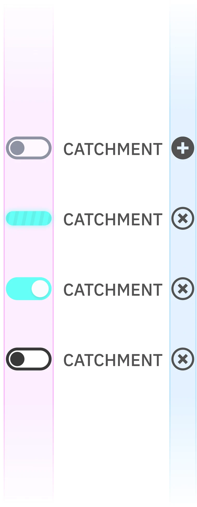
Analyse and iterate
With a list of features to gradually add on, every iteration was an opportunity to fine-tune the good, cut the bad, and make room for new.
Something I really liked was the effect produced on the map, when toggling the CRM and Catchment switches. There was something engaging there — seeing the colors change and the shift in population density. I felt this was a great visual indication of “people flow”, and upon checking, it turned out our testers loved that too plus the simplicity of “turning it on and off”.
After many iterations I came to a version of the toggle that went being just ON/OFF, and accounted for all the use cases.
First state is “empty” and prompts the user to upload a file (either by trying to toggle ON, or tapping
Second state indicates the upload is processing, and allows the user to cancel the action (with confirmation prompt).
Third and fourth are ON/OFF and they allow the user to discard the file to upload a new one (something common — they’d have a lot of catchments which we’d later help manage with a filter style picker).
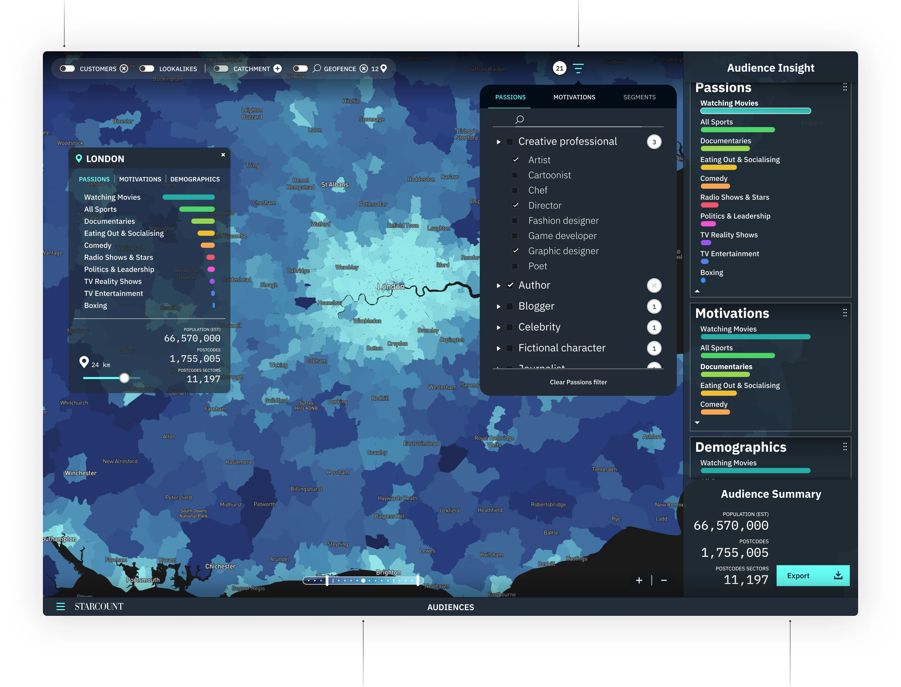
New toggle bar
One stop shop to upload files, remove files, toggle said files on and off (without removing). And more.
Audience filter
Increased functionality, allowing for a wider mix of Passions, Motivations, and Segments.
Heatfilter v2
Better than seeing highest density, was removing lowest. So, I added the ability to filter from behind.
Audience summary v2
Revamped Summary pane, with added Export feature (metrics reflect rows and overall size of export).
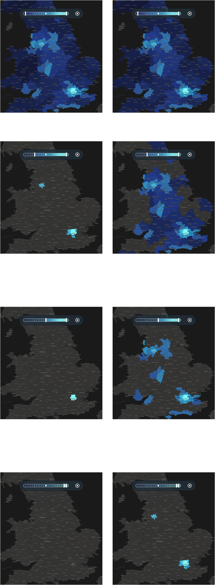
The heat problem
As the UI and UX evolved, I was able to hone in on more specific details and behaviors, that needed a bit more attention and tailoring.
One such detail was how the heatmap responded to the heatfilter input. There was actually nothing wrong with it, but due to the nature of our data, and how people in general aggregate in populated areas, the results were not helpful.
Accurate, but not helpful. So I wanted to display incorrect results, that were helpful. This took some doing, and many discussions with Data.
It’s not often somebody says that out loud, so they were intrigued at least, and I had their attention.
The main argument was that if London is in fact more dense than everywhere else in the map (which it is, by a lot), then it should be represented like that.
But we have to evaluate the context in which this tool is used, and what sort of insight is expected from our users — and who those users are.
As market-targeting tool, it doesn’t help much if 12 pixels shut down 90% of the country — users already know London is dense, and they want to evaluate where else can they find new audiences. So if we turn off the whole map, it stops being helpful.
(The same would happen at a higher zoom, if we’d take London as the base — Oxford Circus would be crazy dense, and it would look like nobody ever lived in Victoria.)
Original
Re-balanced
At 100% range both sides show exactly the same data.
The way we live in society, tends to produce higher density population near capitals or other such convergence areas. So turning off the bottom 25% density, essentially shuts down 90% of the map. Whereas on the re-balanced map, it (visually) shuts down closer to what’s expected.
At 50% there’s barely any change from 75%, which again, represents correct information, but doesn’t tie in with the user’s input which was producing a poor experience. On the re-balanced map, it doesn’t show 50% of the population (nor should it) but the behavior is much more in line with user expectation.
Top 10% — unusable in the original map.
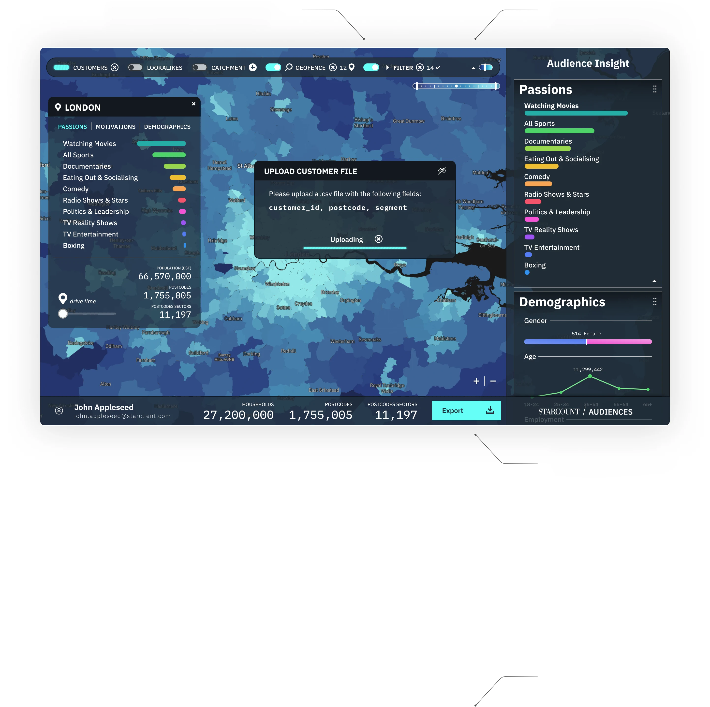
Final tune ups
Passions filter
It made it into the SwitchBar and no longer needed dedicated space.
Tiny filter
At the smaller sizes the full filter would not fit so a tiny proxy one kept its place.
More useful Menubar
I moved the stats & Export from the side bar, reclaiming Metrics space.
Big display (full screen on 27”)
Floating windows, and the ability to sort metrics manually on the Insight pane.
Something I always had to pay attention, was how everything behaved in small screens. This was a “big screen” project, as most users would be at their desk with one or two large monitors, analyzing data. But it was also an important use case to cater to sales reps that would visit clients, and use our tool on the road, in very small screens.
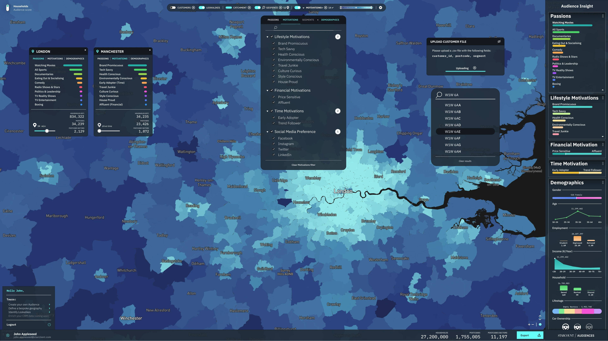
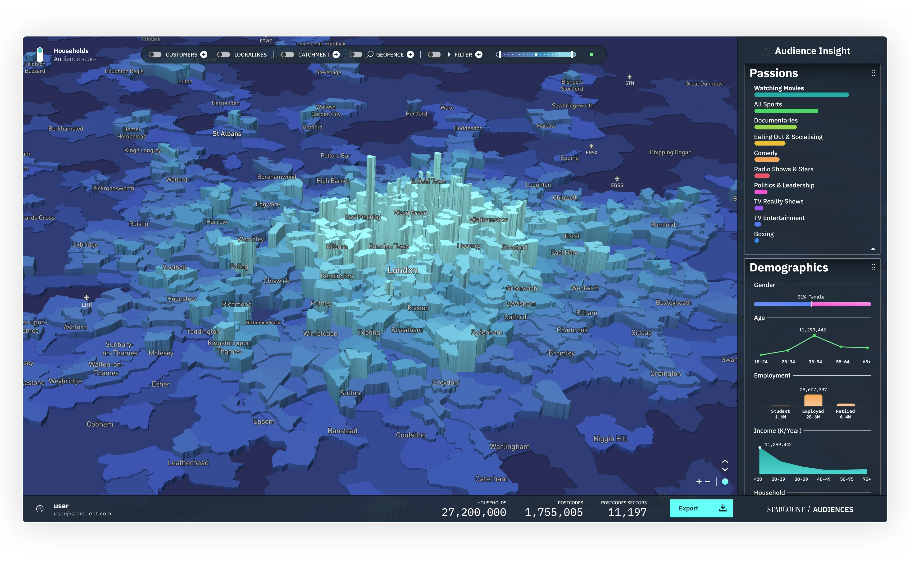
3D and ship.
I was incredibly happy and proud of the work we all had been able to produce in such a short time, but it always felt like something was missing. The heatmap was nice, but as much as I played with the shading and colors, it lacked impact when it came to really dense areas.
Being able to integrate the 3D element to the product was the final piece, and really took it to another level.
And clients agreed! Our product suite beat 1st year target of £1M in revenue, in 91 days.